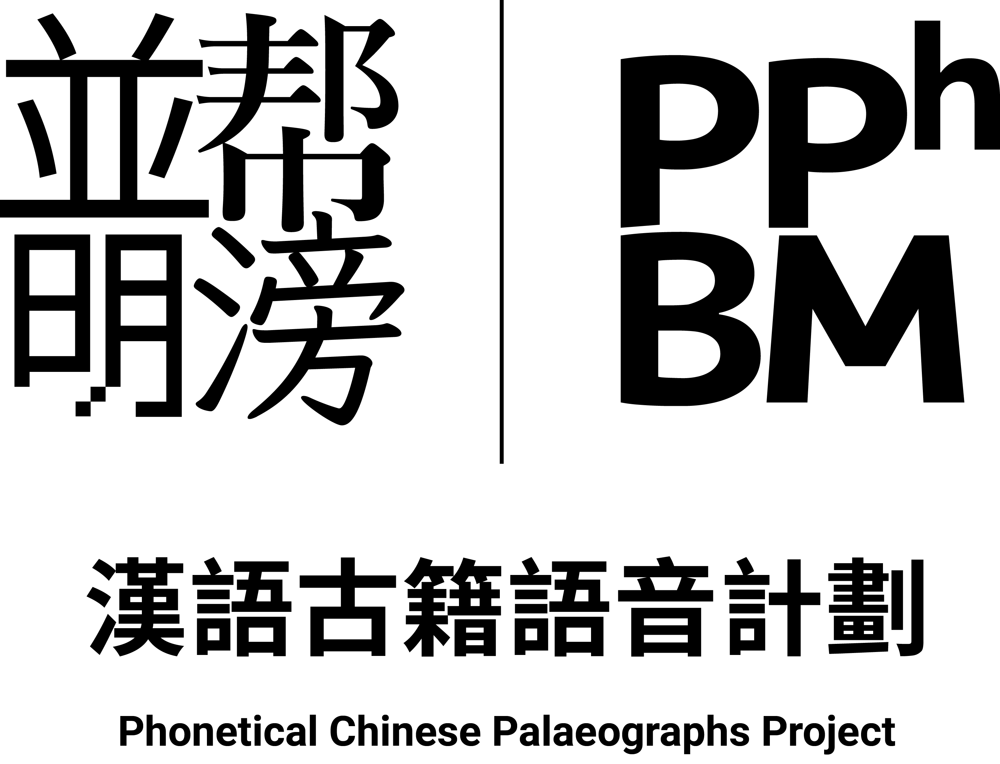

我們
- 從可靠的資訊來源抓取已經電子化整理的古籍, 獲取未整理的古籍(及掃描件)並將其進行電子化整理並存儲進資料庫;
- 將已經電子化整理的古籍以年代為時間單位分類;
- 將我們所存檔的電子化古籍注以音韻資訊, 包括但不限於韻書次目, 常見反切註音, 各時期發音的拉丁化註音, 各家構擬的各時期發音的國際音標 (IPA);
- 將存檔的資料格式化並在網際網路上提供查詢/顯示頁面.
我們將處理, 整理並儲存:
- 古籍原文 [古字形, 現代正體(臺灣), 現代簡體(大陸)]
- 韻書資料
- 志願者提供的構擬發音錄音
- 其他可能有關資料
以及
- 1911 年之前的漢語文字資料
- 可以反映 1949 年之前漢語語音的非漢語資料
- 可以反映 1911 年之前的漢語語音的開放版權的音訊/視訊資料
接下來做需要做的以及我們正在做的
- 完成 詩 的錄入, Feb 20, 2016;
- 完成 廣韻 的匯入, Jan 15, 2016;
- 完成 上古音韻 的匯入, Feb 1, 2016;
- 網站首頁上線, Jan 15, 2016;
- 韻書查詢系統上線, Feb 15, 2016;
- 文字資料查詢系統上線, Mar 15, 2016.
上述日期為預計完成時間.
下一階段任務將於上述任務完成後公佈.
新年好.
這個項目由一群想要獲取更有趣的 IPA 音節的腦洞少年組成.這群少年處理古籍並標上由各音韻學家構擬的古漢語發音之國際音標.
- 幫滂並明的資料由你這樣的志願者維護.
- 大部分漢字在韻書中只有一個讀音, 我們的計算機自動化程式將會自動填上, 這些自動化生成的文字需要進行人工校對.
- 剩下的多音字之小韻就需要你按照漢字意義和上下文進行選擇.
- 同時, 我們需要大量的自由版權的錄音, 你也可以錄製某段選定文字的構擬讀音並上傳.
如果你有興趣並想要幫助我們補全這個資料庫, 請聯絡我們:
Twitter: @oranzhang, @arthur2e5
Weibo: @奥软奥软, @Arthur2e5-已挂起
Email: orancho#outlook.com, arthur2e5@aosc.io
所有完成處理的資料將在 Github 公開.